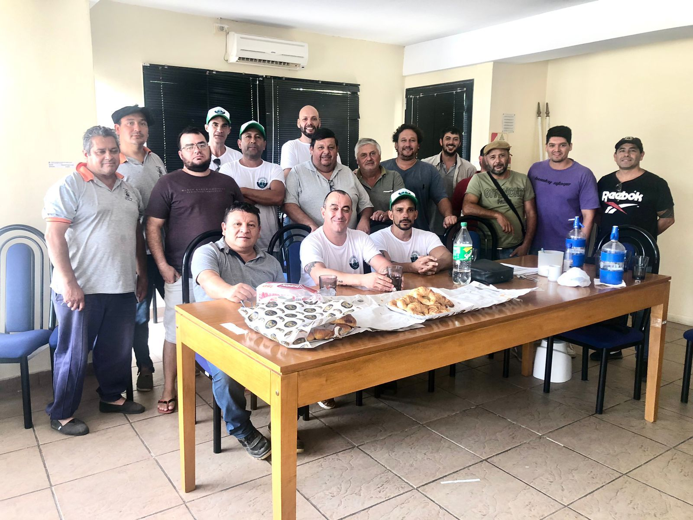

Union Federal - Lista Verde
ELECCIONES SERENOS DE BUQUES: EL MINISTERIO DE TRABAJO DIO LUZ VERDE A LA ''LISTA VERDE''
El ministerio de trabajo de la Nación, en la últimas horas de la tarde de este viernes, emitió la resolución habilitando y oficializando a la ''Lista Verde'' que encabeza el bahiense Javier Guerra, secundado por el sanlorencino Ariel Trivisonno, para competir en las próximas elecciones del 16 de marzo en el Sindicato Unico de Serenos de Buques.
De esta manera, la máxima autoridad administrativa del trabajo del país, dió el visto bueno para a la Lista Verde, en su artículo primero, dió lugar a la presentación que formuló Javier Guerra como apoderado de la lista, dejando sin efecto la arbitraria y malintencionada decisión de la Junta Electoral, que le había prohibido injustamente, participar en las próximas elecciones.
La noticia, causó mucha algarabía, con un clima de alegría y felicidad, en la Agrupación ''Unión Federal'' que son quienes integran la Lista Verde.
Javier Guerra, candidato a Secretario General, manifestó ''se hizo justicia con esta decisión ministerial, nosotros básicamente queremos elegir y también queremos que nos elijan, es un derecho que nadie nos lo puede privar''.
Guerra dijo ''queremos la oficialización de todos los serenos del país, con nosotros no van a existir las designaciones provisorias; también queremos que el sereno sea LEY; elecciones libres y democráticas en cada delegación: que la obra social llegue a todas las delegaciones; que se liquiden los jornales conforme actividad y carga, ya sea peligrosidad o insalubridad y además, vamos agregando las peticiones que van surgiendo en las distintas delegaciones''.
Javier Guerra culminó ''todos los compañeros que integramos la agrupación Unión Federal y en particular, la Lista Verde, estamos muy conformes con esta resolución y aprovechamos para invitar a todos los afiliados del país, que nos acompañen con su voto, nuestra premisa es defender incondicionalmente el oficio del sereno de buque y tener un sindicato más fuerte''.